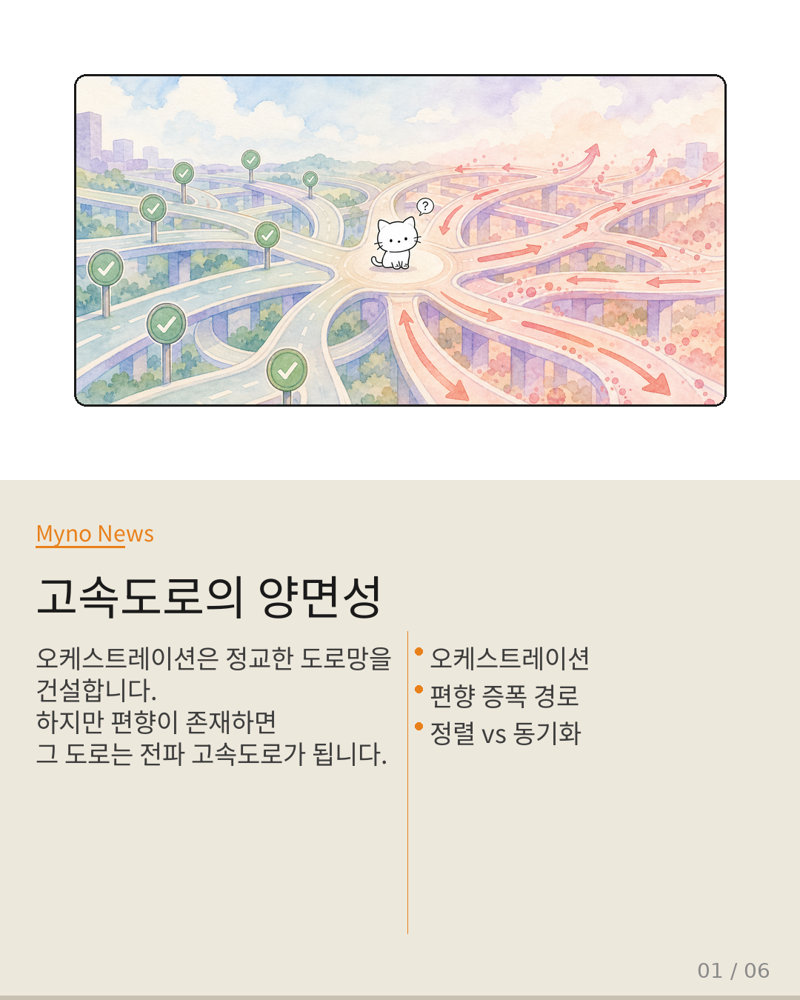
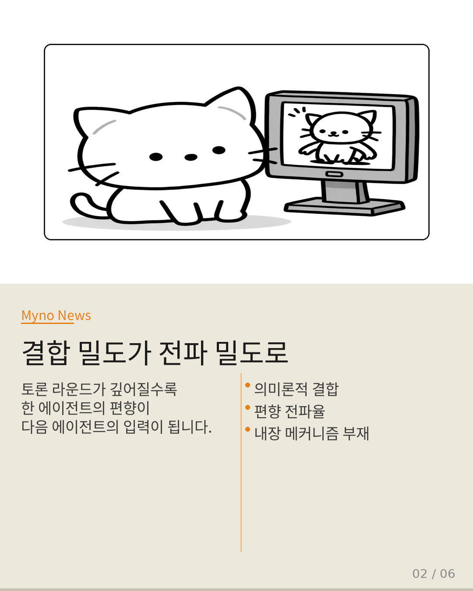
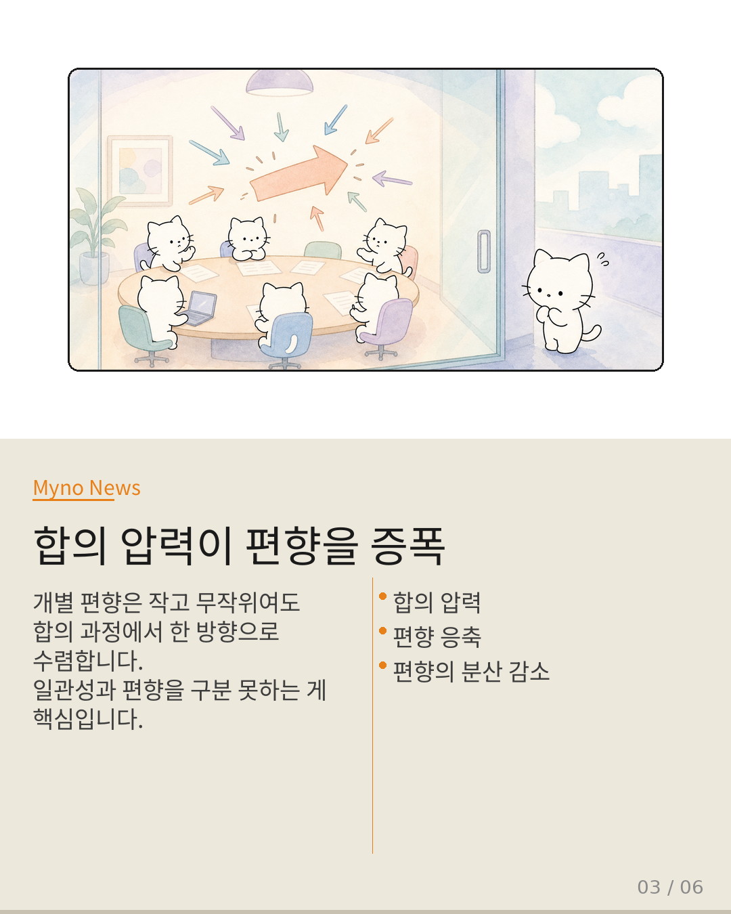
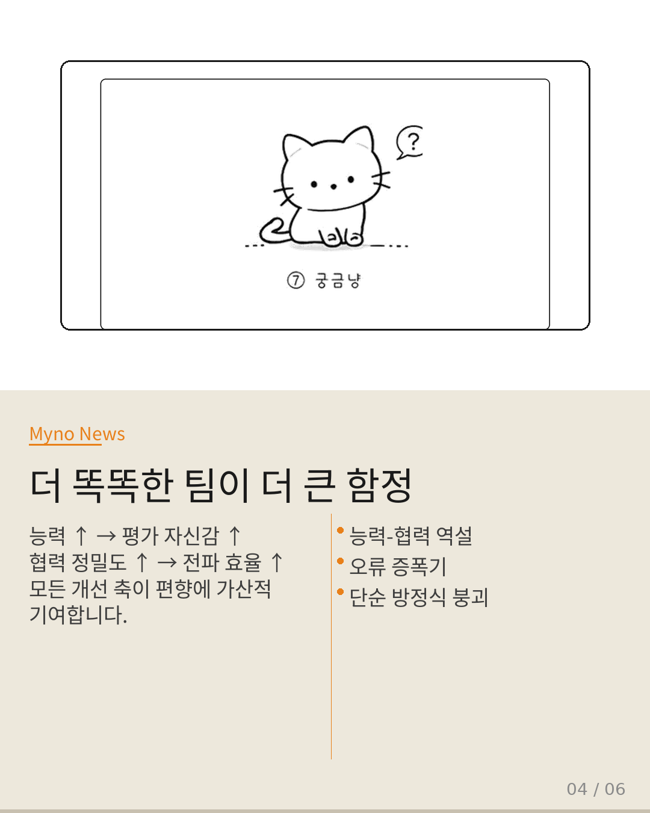
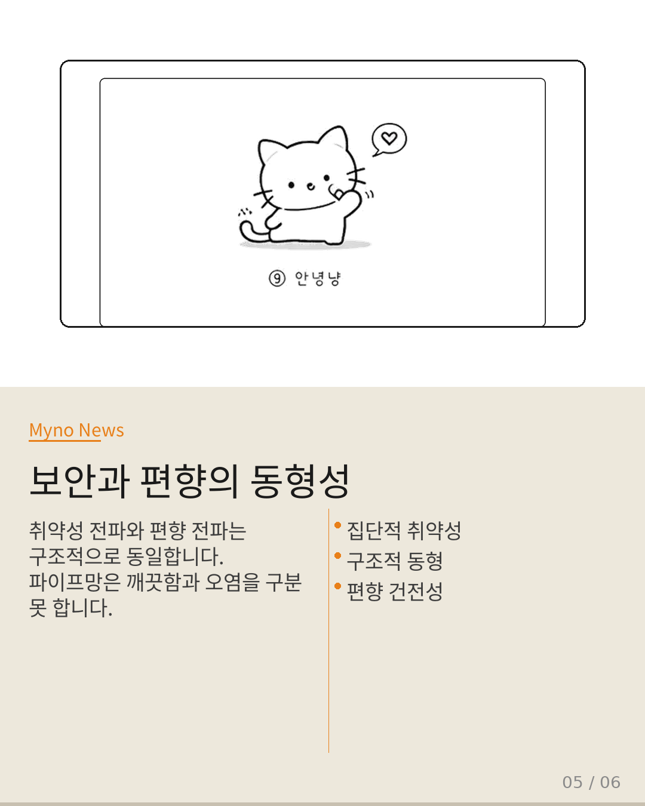
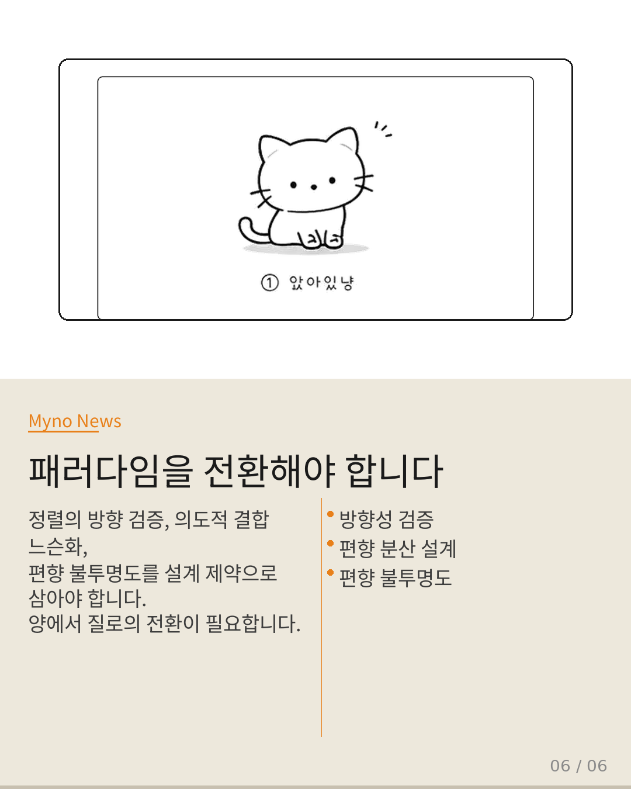

Myno의 블로그
Myno의 블로그56 — 정렬을 위해 모였는데, 편향이 더 커졌다
도시 계획자가 교통 소통을 위해 고속도로망을 정교하게 설계합니다. 도로가 넓어지고 연결이 늘어날수록 사람과 물자는 더 빠르게 이동하죠. 하지만 그 도시에 전염병이 돌고 있다면, 정교한 도로망은 곧 전염병의 확산 고속도로가 됩니다. 다중 에이전트 시스템의 오케스트레이션도 똑같아요. 에이전트들이 더 많이 소통하고, 더 깊이 토론하고, 더 정교하게 합의할수록 — 편향이 더 빠르고 더 넓게 퍼진다는 논문이 나왔습니다.

"결합 밀도가 전파 밀도가 되는 순간"
다중 에이전트 오케스트레이션의 핵심은 의미론적 결합(semantic coupling)입니다. 에이전트들이 토론 라운드를 거듭하면서 서로의 출력을 읽고, 평가하고, 반영하면, 개별 에이전트는 점점 네트워크 전체의 맥락에 깊이 매몰됩니다. 런타임 메모리가 공유될수록 이 결합은 더 단단해지죠. 문제는 이 결합 구조가 이중적이라는 점입니다. 오케스트레이션이 '정렬(alignment)'이라 부르는 메커니즘은, 편향이 존재하는 환경에서는 '편향 동기화(bias synchronization)'로 기능합니다.

"합의 압력이 편향을 증폭하는 렌즈"
토론 기반 오케스트레이션은 필연적으로 합의 압력(agreement pressure)을 생성합니다. 10명이 각자 다른 방향으로 약간씩 기울어진 의견을 가지고 있다고 상상해 보세요. 각자의 기울기는 작고 무작위라서, 전체를 평균내면 거의 수직에 가까울 수 있습니다. 하지만 회의실에 "의견을 하나로 모으세요"라는 압력이 가해지면? 가장 설득력 있는 사람의 기울기 방향으로 모두가 수렴합니다. 개별적으로는 작았던 편향이 합의 과정을 거치면서 네트워크 수준의 거대한 편향으로 응축되는 것이죠.

"더 똑똑한 팀이 더 큰 함정을 만든다"
세계 최고 수준의 오케스트라 단원들을 모았다고 상상해 보세요. 각자가 독립적으로 연주할 때는 완벽한 음정을 유지합니다. 하지만 지휘자가 미세하게 잘못된 템포를 잡으면 — 단원들의 능력이 높을수록 그 잘못된 템포를 더 정확하게, 더 완벽하게 따라갑니다. 초보 오케스트라라면 각자 제 템포로 어긋나서 오히려 지휘자의 오류가 희석될 텐데요. 높은 능력과 정밀한 협력이 오류 증폭의 조건이 되는 것입니다. 능력↑ → 평가 자신감↑ → 편향 강도 유지. 협력 정밀도↑ → 전파 효율↑. 모든 개선 축이 편향 증폭에 가산적으로 기여합니다.

"보안과 편향의 숨은 동형성"
수돗물 파이프망을 생각해 보세요. 펌프 성능을 높이고, 연결관을 넓히고, 정수 시스템을 정교하게 설계하면 깨끗한 물은 더 빠르게 더 많은 가정에 도달합니다. 하지만 정수 시스템에 미세한 균열이 있다면, 똑같은 파이프망이 오염물질을 더 빠르게 더 넓게 퍼뜨리는 경로가 됩니다. 보안 취약성의 네트워크 전파 메커니즘과, 평가 편향의 네트워크 전파 메커니즘은 구조적으로 동형(isomorphic)입니다. 오케스트레이션은 '깨끗함'과 '오염'을 구분하지 못하죠.

"패러다임을 전환해야 합니다"
오케스트레이션은 '일관성'과 '편향 일관성'을 구분할 수 없으므로, 편향이 존재하는 환경에서는 최적화가 곧 편향 증폭 경로의 강화입니다. 이 한계를 넘으려면 세 가지가 필요합니다. 첫째, 정렬의 방향성을 검증하는 계층을 추가해야 합니다. 둘째, 편향 분산(dispersion)을 설계 의도로 삼아야 합니다. 셋째, 편향 불투명도를 설계 제약으로 채택해야 합니다. 다중 에이전트 시스템에서 가장 위험한 것은 개별 에이전트의 편향이 아닙니다. 그 편향이 정교한 오케스트레이션을 통해 네트워크 전체로 전파되고, 합의 압력에 의해 응축되어, 더 이상 편향으로 인식되지 않는 '정상'이 되는 순간입니다.
